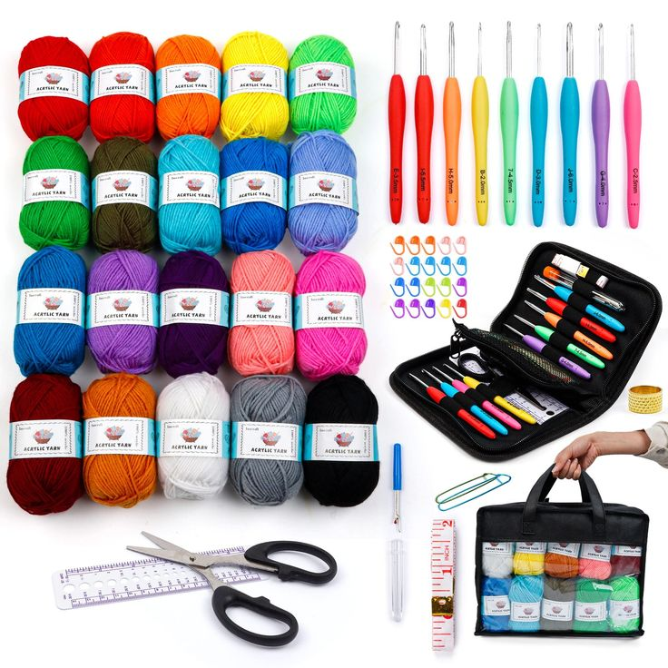
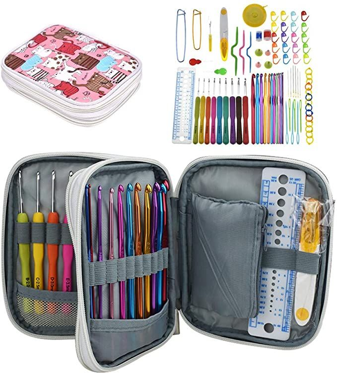
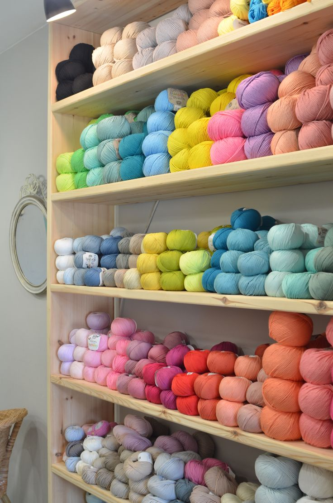
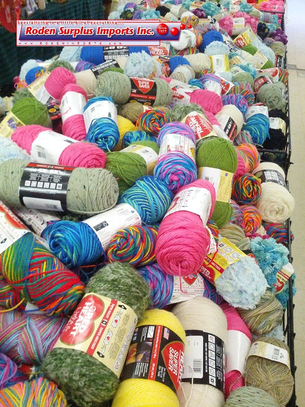
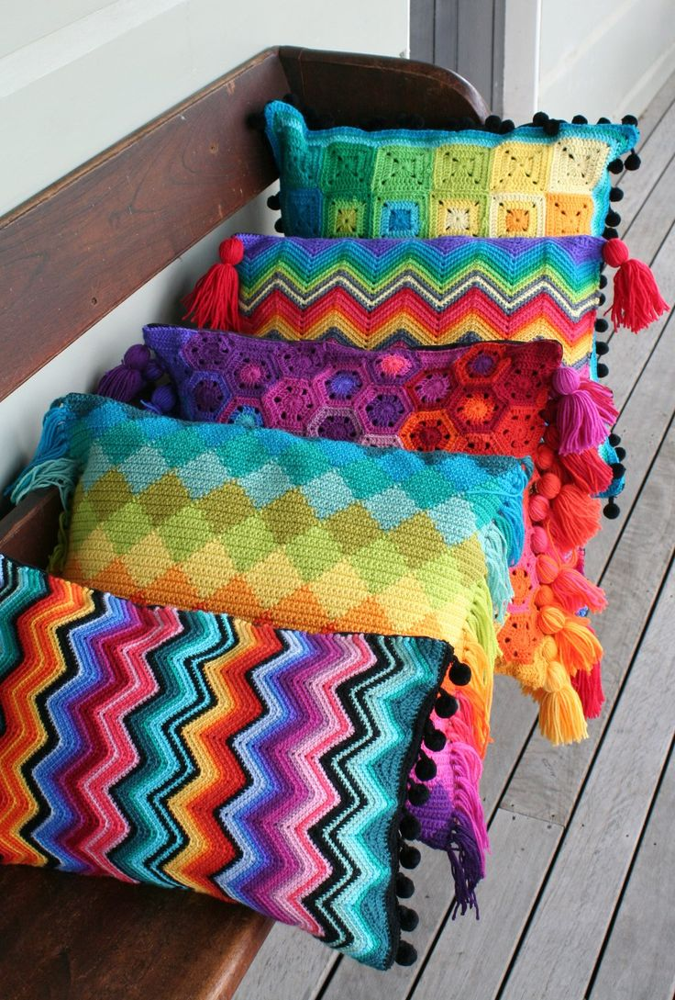

Discover the Joy of Crochet

Beginner's Crochet Set
Perfect for those just starting their crochet journey.

Advanced Crochet Kit
For experienced crocheters looking for a challenge.

Soft Merino Wool Yarn
100% pure merino wool, perfect for cozy projects.

Cotton Blend Yarn
Ideal for summer garments and accessories.

Crocheted Cushion
Handcrafted with love, perfect for chilly days.

Crochet Men's Wear
Stylish and warm, a great addition to any outfit.